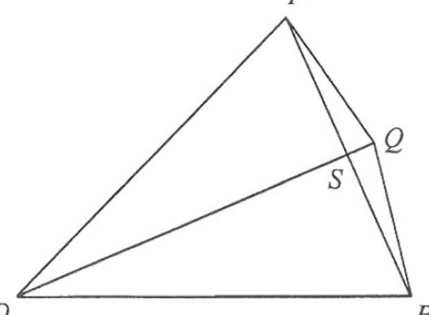

In \(\Delta OPS\) and \(\Delta ORS\), list the three matching facts:
| Statement | Reason |
|---|---|
| \(OP = OR\) | given |
| \(PS = RS\) | given (\(S\) is mid-point of \(PR\)) |
| \(OS = OS\) | common side |
Three pairs of corresponding sides are equal, so
\[\Delta OPS \cong \Delta ORS \quad (\text{SSS})\]
Since the triangles are congruent, \(\angle POQ = \angle QOR\) (i.e. \(OQ\) bisects \(\angle POR\)). This will be used in (b).
\(O\) is the centre and \(Q\) lies on the circle between \(P\) and \(R\). The angle at the centre \(\angle POQ\) is twice the angle at the circumference \(\angle PRQ\):
\[\angle POQ = 2\angle PRQ = 2(10^\circ) = 20^\circ\]
From (a), \(\angle QOR = \angle POQ = 20^\circ\), so
\[\angle POR = \angle POQ + \angle QOR = 20^\circ + 20^\circ = 40^\circ\]
So the sector \(OPQR\) spans \(40^\circ\) at the centre.
Radius \(= OQ = 6\) cm and sector angle \(= 40^\circ\):
\[\text{Area} = \frac{40}{360}\times \pi (6)^2\]
\[= \frac{1}{9}\times 36\pi = 4\pi \text{ cm}^2\]